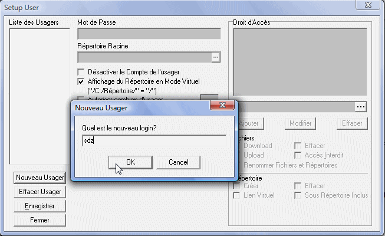

Nous voilà dans la première partie de notre tutoriel qui consiste à faire un petit tour dans le dossier du serveur FTP !
Ça sert à quoi ?
Comprendre le fonctionnement, comment un utilisateur est créé par le logiciel et ainsi pouvoir en recréer via PHP :)
Mais avant :
Créons un petit utilisateur de test
Pour commencer, ouvrez TYPSoft FTP Serveur et allez dans le menu Setup, puis cliquez sur Usagers. Là une fenêtre s'ouvre, cliquez sur Nouveau Usager. Et une fenêtre s'ouvre, indiquez le nom de l'utilisateur. Pour ma part, j'ai choisi l'utilisateur sdz. Voici un exemple :

Puis une fois l'utilisateur entré, cliquez sur OK puis sélectionnez l'utilisateur ; dans le champ Mot de Passe, écrivez un mot de passe pour l'utilisateur et sélectionnez le répertoire dans lequel l'utilisateur aura accès grâce au . . .. Puis dans Droit d'accès, sélectionnez le chemin et cochez les cases auxquelles il aura accès puis cliquez sur Enregistrer : c'est fini !
Visionnons notre fichier users.ini !
Maintenant que l'utilisateur est créé, nous allons ouvrir notre fichier users.ini présent dans le dossier du logiciel FTP.
Deux minutes les ZérOs ! Donc je traduit ligne par ligne :
Citation : users.ini
[sdz]
-> Le nom de l'utilisateur entre crochet
Citation : users.ini
Password=098F6BCD4621D373CADE4E832627B4F6
-> Mot de passe encrypté en md5() puis mis en majuscule
Citation : users.ini
UserDisable=0
-> pour désactiver le compte de l'utilisateur s'il est égal à 1. Ici, le compte est activé.
Citation : users.ini
VirtualDir=1
-> pour cacher 'C:/Wamp' (lien virtuel), ce qui va donner à la place le chemin '/'.
Citation : users.ini
Time-Out=0
-> temps en minutes avant que le compte ne soit déconnecté en cas d'inactivité (0 = pas de limite).
Citation : users.ini
HomePath=C:\Wamp
->Chemin sur le serveur dans lequel l'utilisateur sera connecté
Citation : users.ini
Dir0=C:\wamp\|DU_EMRY____|
-> Ici, l'utilisateur pourra télécharger, envoyer, effacer et renommer ses fichiers. Créer, supprimer et renommer ses répertoires (DU_EMRY____).
Maintenant que nous avons compris le fonctionnement pour insérer un utilisateur, passons aux différents types de droits....
Les droits des utilisateurs
Observons les droits possibles :
D__________ -> Téléchargement
___E_______ -> Effacer un fichier
_U_________ -> Upload
______Y____ -> Renommer les fichiers et répertoires
__A________ -> Accès interdit
____M______ -> Créer un répertoire
_____R_____ -> Effacer un répertoire
________S__ -> Sous-répertoire inclus
_________V_|Nom du lien -> Lien virtuel (remplacer « Nom du lien » par le nom du lien)
Vous l'aurez sans doutes compris, on peut combiner plusieurs droits pour n'en faire qu'un seul. Par exemple si nous voulons que l'utilisateur puisse télécharger, effacer, uploader des fichiers/dossiers avec sous répertoire inclus nous aurons alors cette ligne :
Ah, nous voilà enfin arrivés ! Pour commencer donc, créez un fichier index.html, puis un autre qui s'appelle verif_user.php.
Ce que l'on va mettre dans le fichier index.html :
les champs (utilisateur, mot de passe...) ;
et les droits.
Commençons par le début.
index.html
Donc maintenant nous allons réaliser l'index, contenant un formulaire de renseignement pour un ajouter un nouveau utilisateur (nom de l'utilisateur, mot de passe, chemin vers son répertoire virtuel, son répertoire racine, temps en minute après déconnexion si inactivité et ses droits).
Compris ? C'est parti !
Code final :
<!DOCTYPE html PUBLIC "-//W3C//DTD XHTML 1.0 Strict//EN" "http://www.w3.org/TR/xhtml1/DTD/xhtml1-strict.dtd">
<html xmlns="http://www.w3.org/1999/xhtml" xml:lang="fr" >
<head>
<meta http-equiv="Content-Type" content="text/html; charset=utf-8" />
<title>Ajouter des utilisateurs FTP en ligne ! - by kevindu59</title>
</head>
<body>
<form method="post" action="verif_user.php">
<table>
<tr>
<td>Nom de l'utilisateur :</td>
<td><input type="text" name="user" /></td>
</tr>
<tr>
<td>Mot de passe :</td>
<td><input name="mdp" type="password" /></td>
</tr>
<tr>
<td>Vérification du mot de passe :</td>
<td><input name="mdp_verif" type="password" /></td>
</tr>
<tr>
<td>Répertoire Virtuel :</td>
<td><input name="virtuel" type="text" /></td>
</tr>
<tr>
<td>Répertoire racine :</td>
<td><input type="text" name="rep_racine"></td>
</tr>
<tr>
<td>Déconnecter après (en min) :</td>
<td><input maxlength="5" size="5" type="text" name="timestamp" /></td>
</tr>
<tr>
<td>Droits :</td>
<td>Droits sur fichiers :<br />
<input name="dl" type="checkbox" />Télécharger<br />
<input name="effacer" type="checkbox" />Effacer<br />
<input name="upload" type="checkbox" />Upload<br />
<input name="renommer" type="checkbox" />Renommer<br /><br />
Droits sur répertoire :<br/>
<input name="creer_rep" type="checkbox" />Créer<br />
<input name="effacer_rep" type="checkbox" />Effacer<br />
<input name="ss_rep" type="checkbox" />Sous-répertoire inclus</td>
</tr>
<tr>
<td colspan="2"><input value="Envoyer" type="submit" /></td>
</tr>
</table>
</form>
</body>
</html>
Je n'ai pas besoin de vous expliquer ce code mais si vous n'y comprenez rien, direction le cours de M@teo21 sur le HTML.
Passons maintenant à la vérification !
verif_user.php
Bon, jusqu'à maintenant j'ai tout fait donc...
Donc, vous allez continuer... Seuls !
Exercice
Dans cet exercice, vous pouvez vous devez faire des vérifications, c'est-à-dire vérifier si le mot de passe est le même que celui de la confirmation, puis faire un switch avec plusieurs combinaisons de droits, et pour finir écrire dans votre users.ini l'utilisateur que vous voulez enregistrer.
Voilà : maintenant à vos cerveaux et à vos claviers !!!
3... 2... 1... 0 ->
Correction !
Nous voilà enfin arrivés à la correction, celle que vous attendez tous ! C'est parti donc, mais rassurez-vous je ne vais pas faire plein de combinaisons ! C'était une blague ! Allons-y !
<?php
/*
D__________ -> Téléchargement
___E_______ -> Effacer un fichier
_U_________ -> <italique>Upload</italique>
______Y____ -> Renommer les fichiers et répertoires
__A________ -> Accès interdit
____M______ -> Créer un répertoire
_____R_____ -> Effacer un répertoire
________S__ -> Sous-répertoire inclus
_________V_|Nom du lien -> Lien virtuel (remplacer « Nom du lien » par le nom du lien :p )
*/
//définition des variables
$utilisateur = $_POST['user'];
$mdp = $_POST['mdp'];
$mdp_verif = $_POST['mdp_verif'];
$chemin = $_POST['rep_racine'];
$virtuel = $_POST['virtuel'];
$deco = $_POST['timestamp'];
//Quelques conditions pour les droits
if (isset($_POST['dl'])) $d_dl = $_POST['dl'];
if (isset($_POST['effacer'])) $d_effacer = $_POST['effacer'];
if (isset($_POST['upload'])) $d_upload = $_POST['upload'];
if (isset($_POST['renommer'])) $d_renommer = $_POST['renommer'];
if (isset($_POST['creer_rep'])) $d_creer_rep = $_POST['creer_rep'];
if (isset($_POST['effacer_rep'])) $d_effacer_rep = $_POST['effacer_rep'];
if (isset($_POST['ss_rep'])) $d_ss_rep = $_POST['ss_rep'];
?>
Maintenant, nous allons vérifier si le mot de passe est identique et si oui, la super requête va faire une combinaison pour créer les droits de l'utilisateur.
<?php
if ($mdp == $mdp_verif) // Mot de passe identique à la confirmation, on continue !
{
$mdp = md5($mdp); //Met en MD5
$mdp = strtoupper($mdp); //Puis en MAJUSCULE
$d1 = $d2 = $d3 = $d4 = $d5 = $d6 = $d7 = $d8 = $d9 = $d10 = $d11 = "_";
if (isset($_POST['dl'])) //Droit de téléchargement
if ($d_dl)
$d1 = "D";
if (isset($_POST['upload'])) //Droit de téléversement
if ($d_upload)
$d2 = "U";
if (isset($_POST['effacer'])) //Droit d'effacer un fichier/dossier
if ($d_effacer)
$d4 = "E";
if (isset($_POST['creer_rep'])) //Droit pour créer un répertoire
if ($d_creer_rep)
$d5 = "M";
if (isset($_POST['effacer_rep'])) //Droit pour effacer un répertoire
if ($d_effacer_rep)
$d6 = "R";
if (isset($_POST['renommer'])) //Droit pour renommer un répertoire
if ($d_renommer)
$d7 = "Y";
if (isset($_POST['ss_rep'])) //Droit pour avoir/créer des sous-repertoire
if ($d_ss_rep)
$d9 = "S";
?>
Et pour finir les droits, une petite variable : Cette dernière va assembler tous les droits...
Maintenant, on vérifie si l'utilisateur et le chemin sont renseignés :
<?php
if ($utilisateur == "") // Utilisateur vide -> on quitte la vérification.
{
exit("<p>Erreur l'utilisateur est vide !</p>");
}
if ($chemin == "") // Chemin vide -> on quitte la vérification.
{
exit("<p>Erreur le chemin est vide !</p>");
}
?>
Nous avons fini pour ce qui est de la vérification, nous allons maintenant écrire ceci dans le fichier users.ini !
<?php
$fichier = fopen("C:\\SRVPROD1\\serv_ftp\\users.ini", "a+", 0777); // Chemin vers votre dossier FTP du logiciel (n'oubliez pas de remplacer vos '\' par des '\\' ;).
$code = "
[".$utilisateur."]
Password=".$mdp."
UserDisable=0
VirtualDir=".$virtuel."
Time-Out=".$deco."
HomePath=".$chemin."
Dir0=".$chemin."|".$droit."|";
fputs($fichier, $code);
fclose($fichier);
echo "<p>Utilisateur créé avec succès !</p>";
?>
Et on finit verif_user.php :
<?php
}
else echo "Erreur, les deux mots de passe sont différents !<br />";
?>
Et voilà, vous pouvez dès maintenant créer des utilisateurs en ligne !
Maintenant je vais vous donner quelques amélioration possible que vous pourrez réaliser sans trop de difficulté ;)
Vérifier que le nom de utilisateur créé est unique
Rajouter « Aucun accès » (lecture seul) et que si ceci est coché, griser les autres options.
Rajouter « Lien virtuel ».
Rajouter un style CSS
Rajouter « Autoriser 'x' usagers par IP ».
Créer automatiquement un dossier portant le nom de l'utilisateur avec mkdir()
Bref, comme vous auriez pû le constater le code que nous avons réalisé est un peu basique :p A vous de le modifier et ainsi le rendre complet maintenant ;) .
Voilà ! Vous pouvez maintenant créer vos utilisateurs FTP en ligne tout simplement sans se compliquer la vie.
Si vous avez des questions, n'hésitez pas à aller sur le forum ou à me contacter par MP...